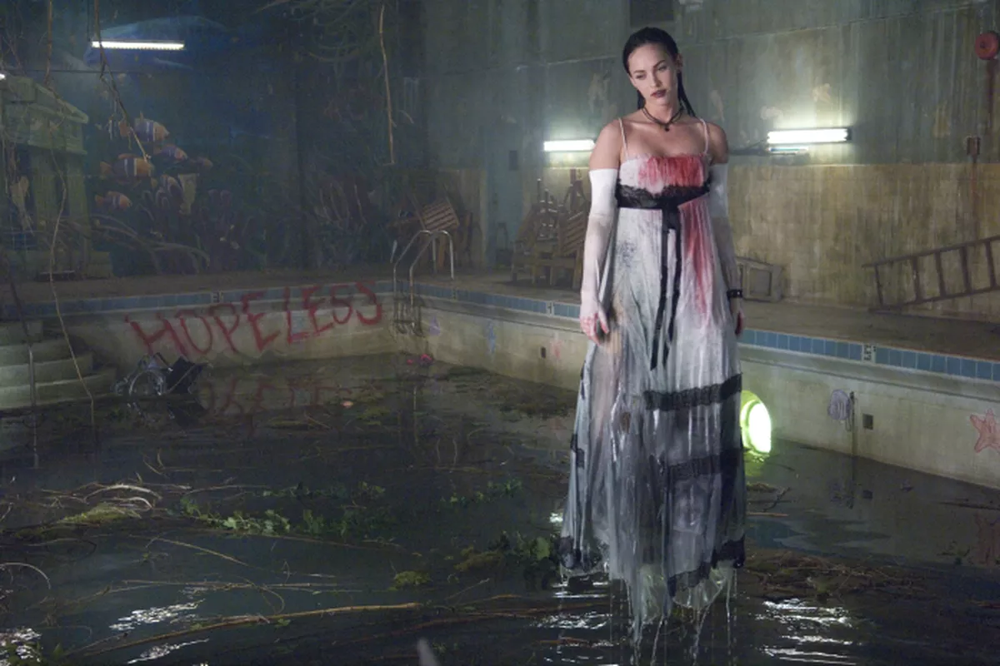

Go on, take everything. Take everything. I want you to.
There’s an episode of Community in which one of the characters sets out to answer the titular question of the 80s sitcom Who’s the Boss?. The phrase Live Through This poses a similar question to be answered: live through what?
I don’t want to talk about Kurt Cobain. I think Courtney Love and company have created a really strong album that could be discussed without much mention at all of the Nirvana frontman who died a week before its release.
But… I mean, he died a week before its release. And so much of the album oozes with this indignation that makes it hard to divorce it from the reality of the life Love was living at the time. I don’t want to spend time talking about drugs or white lighters or any of the dark shit this side of popular culture was known for. But this is a website for how I feel about things, and if I want to talk about how I feel about Live Through This , I’m gonna have to talk about it through the lens of a furious, bitter woman who has lost one of the only things that she cared about in the world.
The move towards a softer sound is definitely a good one. The grunge and riot grrrl movements, while obviously important in the whole of musical development, sound too nihilistically aimless. They churn and groan, but oftentimes, it’s without a purpose specific to any given song or album. I appreciate and respect movements that are broader than any constituent part. I don’t put their albums on lists.
Live Through This is different. “Violet” makes that immediately clear. The guitar is softer (at times), the drums kinder (at times), Love’s voice gentler (at times). It still has a bona fide edge to it, still encompassed in the same “fuck everything” attitude that made those above movements such fantastic counterparts to the artistically devoid sounds that dominated pop in the 90s.
It’s this attitude that propels the album. Courtney Love is a Shakespearean character after the play is over, an Ophelia who survives her drowning and comes out with makeup streaming down her face. She is nihilistic and uncaring and knows exactly where this will get her, as she sings on “Miss World” about making her bed and dying in it.
The music is wailing and sharp, and the guitars and drums thrash without being overbearing. On “Jennifer’s Body,” the grinding guitars pause for ghostly shimmers. “Doll Parts” builds like a rock song. But let’s be real: I’m here for “Rock Star.”
The comments about Olympia (really, about Evergreen State College) clearly demonstrate disdain for the riot grrrl movement. But I don’t feel that same disdain. DIY and zine aesthetics have always appealed to me, and I do really like Reject All American1. As a result, I don’t read “Rock Star” as a genre war, but as a commentary on Cobain.
I know, I know! But look, male musicians write breakup albums all the time and they’re just supposed to get a pass because the person they were involved with wasn’t famous? Just because stoner teenage boys around the country idolized Cobain in the 90s doesn’t mean Love’s work is any less impactful. It’s about him, but it’s not really about him. It’s about her.
That’s the thing, isn’t it? All these male-driven breakup albums — which, as you’ll see, I love very much — tend to take away the agency of the woman they’re about. In 90s rock, who had more agency, more clout, than Cobain? Who else could have written “Rock Star” but Love? Her name is Love, people!
The start of the song is a mustering of courage. Time to talk about a world that has fallen apart, a revolution that never came. A world in which everyone is the same, talks the same, even… you know. Love is filled with anger and angst, and when she yells “You make me sick” she is yelling at a culture that killed her husband. She is so cynical, mocking those who say “Do it for the kids.” She points to the kids who end up like Cobain and asks – is this what we’re doing for them?
To Love, everyone is boring, vapid, materialistic, pointless, cruel, patronizing, arrogant, dull, spineless, gray. She’s the girl at high school who sits and stares at everyone else, hating them. She’s Janis Ian. She’s Daria. She’s Courtney Love. The world has taken everything she actually cares about. She has to live through life where not a single person near her is worthwhile.
Not anymore.
1Even if it didn’t make it onto this list.